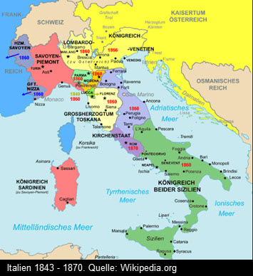

![ Das Königreich Sizilien geht auf die normannische Eroberung Süditaliens zurück, durch die zunächst mehrere kleinere Herrschaften entstanden, die von verschiedenen Mitgliedern der Familie Hauteville ausgeübt wurden. 1127 und 1128 fielen das Herzogtum Apulien und das Fürstentum Tarent durch Erbschaft an Roger II., Graf von Sizilien. Gegenpapst Anaklet II. erhob das Herrschaftsgebiet Rogers im September 1130 zum Königreich, Roger wurde an Weihnachten 1130 in Palermo gekrönt. Roger konnte in der Folge seine Herrschaft gegen verschiedene Fürstenrebellionen stabilisieren und 1137 um das Herzogtum Neapel erweitern. 1139 erreichte er nach militärischen Erfolgen die Anerkennung seines Königreiches durch Papst Innozenz II. im Vertrag von Mignano.](pics/2Sicilie.jpg){kind=link}
Das Königreich Sizilien geht auf die normannische Eroberung Süditaliens zurück, durch die zunächst mehrere kleinere Herrschaften entstanden, die von verschiedenen Mitgliedern der Familie Hauteville ausgeübt wurden. 1127 und 1128 fielen das Herzogtum Apulien und das Fürstentum Tarent durch Erbschaft an Roger II., Graf von Sizilien. Gegenpapst Anaklet II. erhob das Herrschaftsgebiet Rogers im September 1130 zum Königreich, Roger wurde an Weihnachten 1130 in Palermo gekrönt. Roger konnte in der Folge seine Herrschaft gegen verschiedene Fürstenrebellionen stabilisieren und 1137 um das Herzogtum Neapel erweitern. 1139 erreichte er nach militärischen Erfolgen die Anerkennung seines Königreiches durch Papst Innozenz II. im Vertrag von Mignano.

as Königreich Sizilien geht auf die normannische Eroberung Süditaliens zurück, durch die zunächst mehrere kleinere Herrschaften entstanden, die von verschiedenen Mitgliedern der Familie Hauteville ausgeübt wurden. 1127 und 1128 fielen das Herzogtum Apulien und das Fürstentum Tarent durch Erbschaft an Roger II., Graf von Sizilien. Gegenpapst Anaklet II. erhob das Herrschaftsgebiet Rogers im September 1130 zum Königreich, Roger wurde an Weihnachten 1130 in Palermo gekrönt. Roger konnte in der Folge seine Herrschaft gegen verschiedene Fürstenrebellionen stabilisieren und 1137 um das Herzogtum Neapel erweitern. 1139 erreichte er nach militärischen Erfolgen die Anerkennung seines Königreiches durch Papst Innozenz II. im Vertrag von Mignano.